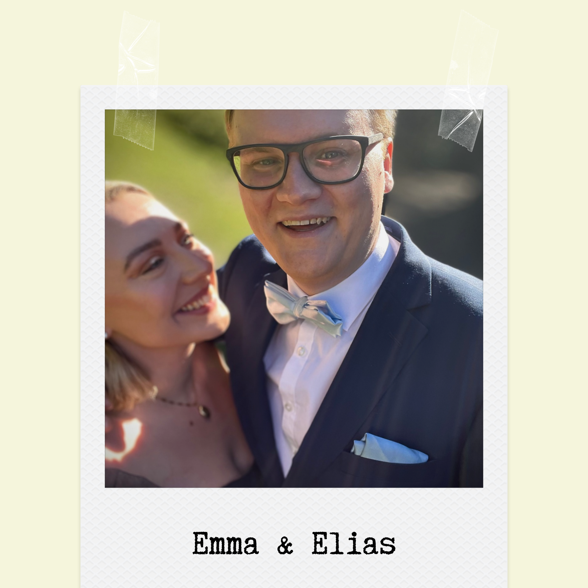
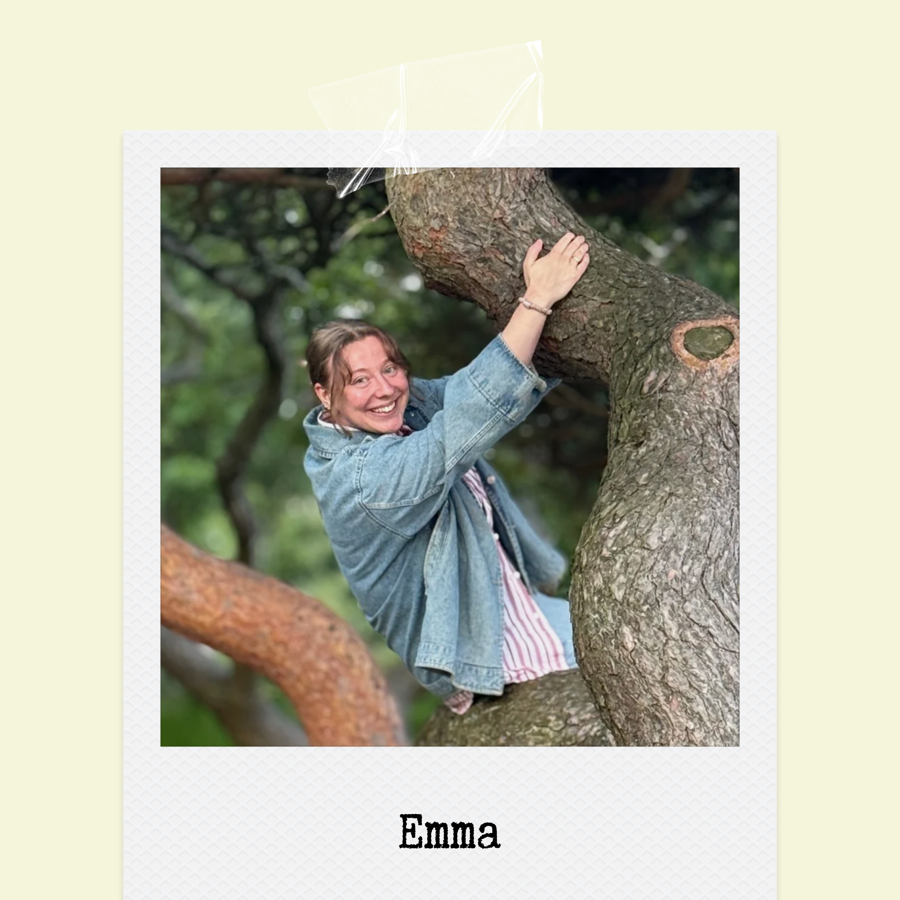
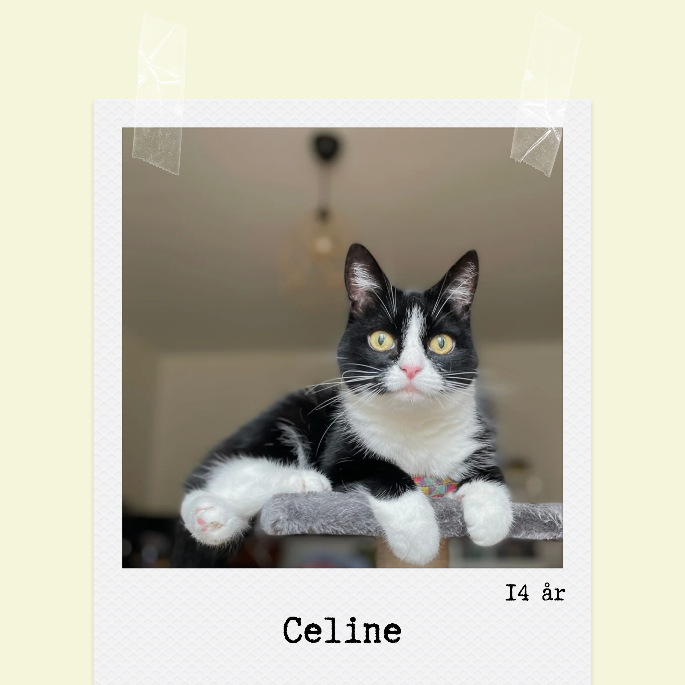

Välkommen till Lite mer smör!
Var har du hamnat nu?
Jo, du har hamnat på Lite mer smör. En webbplats som samlat ihop de beprövade favoritrecept jag återkommit till under åren. Vissa är översatta från amerikanska recept, vissa har jag hittat på själv och andra är klassiker från svenska kokböcker. Testa ett recept, vettja! Jag lovar att du inte kommer bli besviken.
Vem är jag då?
Jag heter Emma Hultén. Jag är en snart 30-årig Sundsvallsbo, som bor tillsammans med min sambo Elias och vår galna katt. Anledningen till att matlagning och bakning är så viktigt för mig, liksom för många andra, är att det är ett sätt att visa kärlek till andra och till sig själv. Det är få saker i livet som kan toppa känslan när man tar en tugga av det man själv lagat och hjärnan skriker "DET HÄR ÄR SÅ BRA! JAG ÄR SÅ BRA, BÄST! Huuur kan jag vara så bra!?". Det som kanske kommer nära, det är när ens närmaste vänner hyschar rummet för att första tuggan måste få vara i fokus. En sak som är obligatorisk när man ska laga mat eller baka är "ful"-dansandet. Till det rekommenderar jag i princip vad som helst från 60- till 70-tal.


